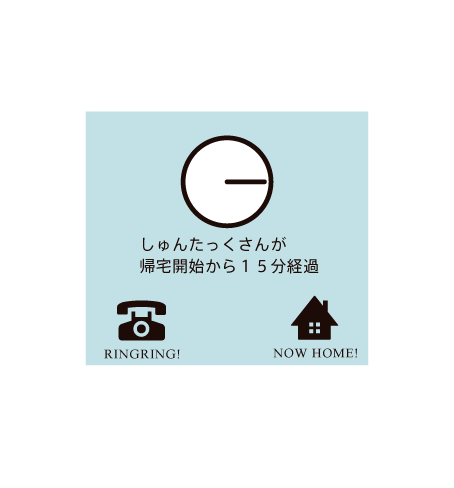

Stop

10月5日（金）午後11時頃、渋谷区道玄坂上の路上で、
10月5日（金）午後7時30分頃、墨田区押上3丁目の路上で、
10月4日（木）午後9時30分頃、町田市原町田1丁目の路上で、
10月3日（水）午後10時頃、渋谷区道玄坂上の路上で、
10月2日（火）午後7時30頃、新宿区歌舞伎町1丁目の路上で、
10月1日（月）午後11時15頃、渋谷区道玄坂上の路上で、
9月30日（日）午後9時40頃、渋谷区道玄坂上の路上で、
9月29日（土）午後11時45頃、新宿区歌舞伎町の路上で、
9月28日（金）午後9時30頃、町田市原町田1丁目の路上で、
NEWS
10月5日（金）午後11時頃、渋谷区道玄坂上の路上で、帰宅中の女性が男に身体を触られました。不審者の特徴：黒っぽいジャンパー、オートバイ利用（黒っぽい原付スクーター）
設定
項目1
項目2
項目3
項目4